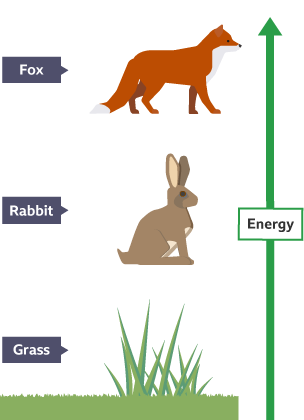
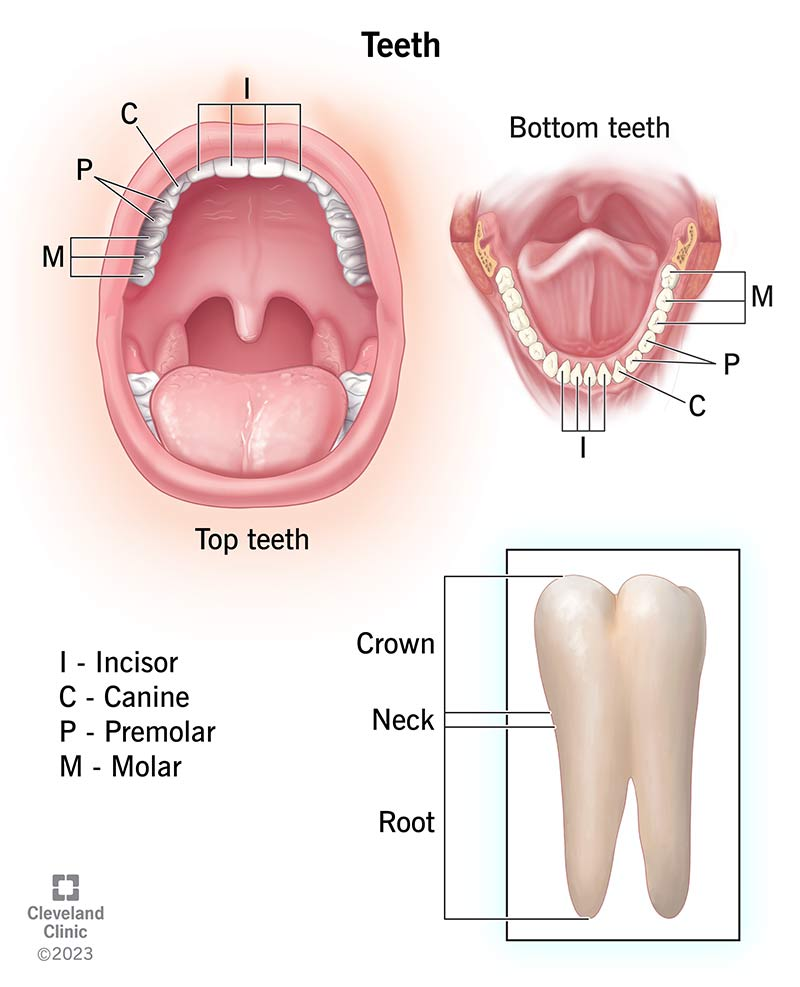
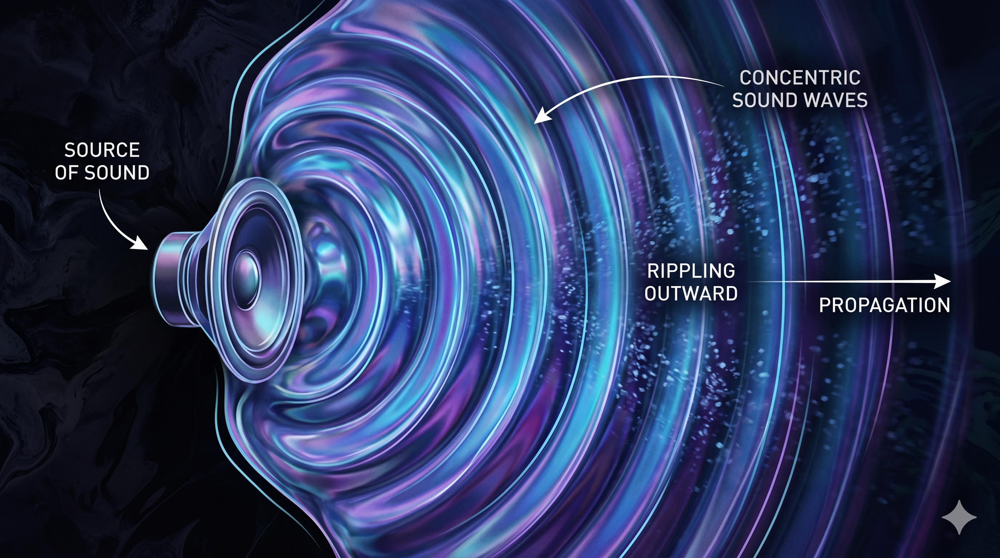

Living Things and their Habitats
Every living thing belongs somewhere — and belongs to a group.
A habitat is the place where an animal or plant lives. A fox lives in woodland. A seahorse lives in the ocean. A camel lives in the desert.
Scientists sort living things into groups. This is called classification. The biggest groups are:
- Vertebrates — animals with a backbone (fish, amphibians, reptiles, birds, mammals).
- Invertebrates — animals without a backbone (insects, spiders, worms, jellyfish).
- Plants — make their own food using sunlight.
- Fungi — mushrooms, mould, yeast. Not plants, not animals.
A food chain shows who eats what. It usually starts with a plant (which makes food from sunlight), then a plant-eater, then a meat-eater. Arrows point from the eaten to the eater.
Example: grass → rabbit → fox.

Producers (plants) make their own food. Consumers eat other living things. A predator hunts other animals; the hunted animal is called its prey.
Animals, including Humans
How food travels through your body, and the four types of teeth that start the journey.
Your digestive system breaks food down so your body can use the goodness. It has six main parts:
- Mouth — teeth chew, saliva softens.
- Oesophagus — a tube that squeezes food down to the stomach.
- Stomach — acid and muscles mash food into a soupy mix.
- Small intestine — the goodness (nutrients) passes into the blood here.
- Large intestine — soaks up the water.
- Bottom — the waste leaves the body.
Humans have four types of teeth, each with a different job:
- Incisors — the flat front teeth. For biting.
- Canines — the pointy ones. For tearing.
- Premolars — flatter, behind the canines. For crushing.
- Molars — big flat ones at the back. For grinding.

States of Matter
Everything around you is a solid, a liquid, or a gas.
Matter is anything that takes up space. It comes in three states:
- Solid — keeps its shape and size. Its particles are packed tightly in a pattern (ice, wood, a book).
- Liquid — keeps its size but changes shape to fit its container. Its particles slide past each other (water, juice, oil).
- Gas — changes both shape AND size to fill any space. Its particles zoom around freely (air, steam).
Matter changes from one state to another when it is heated or cooled:
- Solid → liquid = melting (ice into water).
- Liquid → gas = evaporation (puddle drying in the sun).
- Gas → liquid = condensation (steam on a cold window).
- Liquid → solid = freezing (water into ice).
This is the water cycle: the sun heats rivers and seas, water evaporates into clouds, the clouds cool, and it rains back down. Over and over, forever.
Sound
Sounds are tiny wiggles in the air.
Sound is made when something vibrates. The shaking pushes the air, and the air carries the wiggle to your ear.
Try it: put your hand on your throat and hum. You can feel it vibrating!
Two things change how we hear a sound:
- Pitch — how HIGH or LOW a sound is. A whistle has a high pitch. A drum has a low pitch. Faster vibrations = higher pitch.
- Volume (or loudness) — how LOUD or QUIET a sound is. Bigger vibrations = louder sound.
Sound gets quieter the further away you are from the source. A jet plane sounds thundering on the runway but a whisper when it’s miles above you.
Sound can travel through solids, liquids, and gases. But it cannot travel through a vacuum (empty space with no air). That’s why space is silent.

Stretch a rubber band over an empty cup. Ping it. Can you see it vibrating? Now stretch a second band tighter. Does it sound higher or lower?
Electricity
Tiny particles racing around a loop make our lights glow.
Electricity is a flow of tiny particles called electrons through a wire. They can only flow if they have a complete loop to travel around. This loop is called a circuit.
A simple circuit has three parts:
- A power source — like a battery or the mains plug.
- Wires — the road the electricity travels along.
- A component — like a bulb, buzzer, or motor that DOES something with the electricity.
If the circuit has a break anywhere, nothing works. That’s what a switch does — it creates or closes a gap in the circuit.
Conductors let electricity flow through them (copper, gold, iron, most metals). Insulators block electricity (plastic, rubber, wood, glass). Your plug has metal pins (conductor) and a plastic case (insulator) — that’s why they’re safe to touch.
Test Yourself!
Ten questions drawn from a big pool — order is different every time you reload.